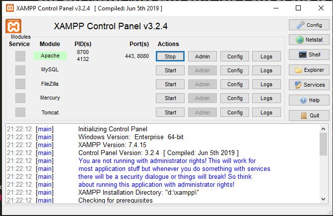
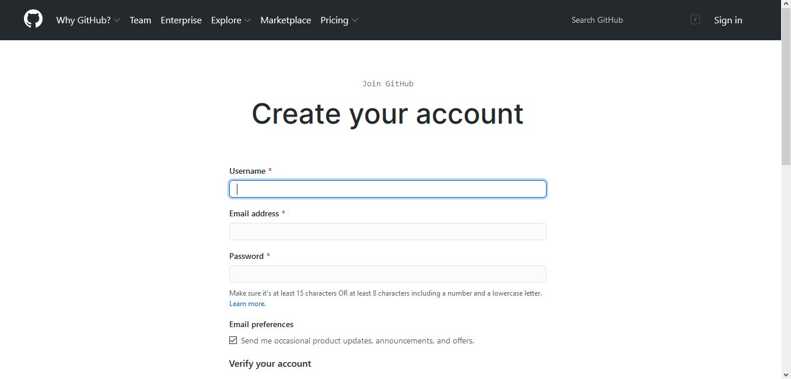
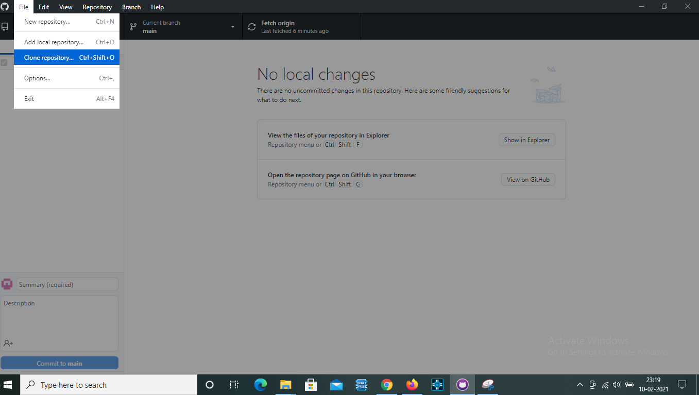
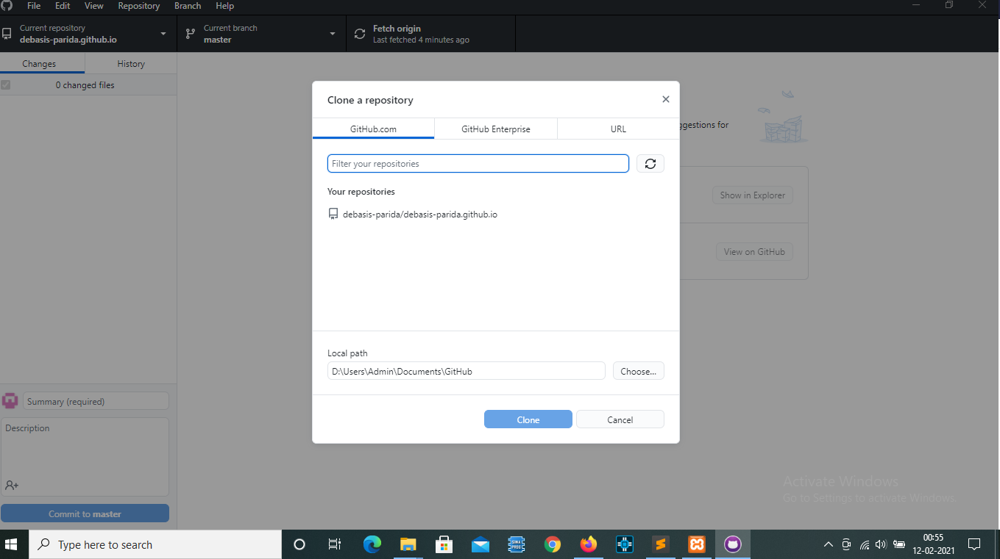
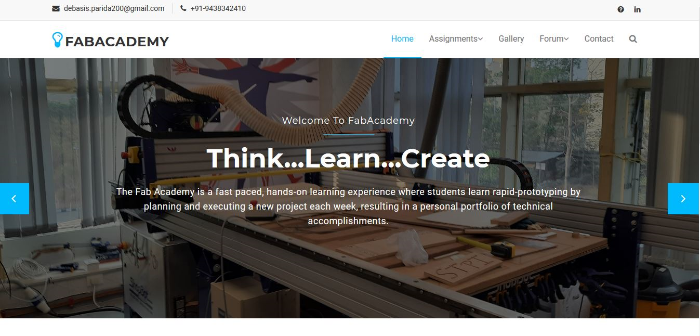

Principle & Practices/Project Management
By: Debasis Parida on:
Finally the day has arrived and we all are very much excited to dive into the ocean of skills to acquire as much we can. Prof. Neil Gershenfeld has imparted a wonderful session on principle & practices and project management. In this week's assignment, we were given a task to sketch a potential final project and to build and host our own website using multiple tools including HTML, CSS, Bootstrap etc.
Earlier while working on some projects in IoT i have came across creating HTML webpages and using tools such as CSS, Bootstraps. So i made this webpage using these tools.Then i need to host it in Github repository.For local developemeny and testing of webpage i am using XAMPP localhost and after successful completion i had hosted it into my github repository. The steps to create a github repository and also using XAMPP is shown below:
What is XAMPP?
XAMPP is one of the widely used cross-platform web servers, which helps developers to create and test their programs on a local webserver.XAMPP is an abbreviation where X stands for Cross-Platform, A stands for Apache, M stands for MYSQL, and the Ps stand for PHP and Perl, respectively. It is an open-source package of web solutions that includes Apache distribution for many servers and command-line executables along with modules such as Apache server, MariaDB, PHP, and Perl.
So first download and install XAMPP in your PC.As shown in the figure, the XAMPP control panel has multiple options such as Apache, MySQL etc. In our case we need only Apache webserver to be turned ON hence i started it.After that inside the XAMPP installation directory go to "htdocs" folder and paste all the website HTML and other dependent files into the folder.Then open the browser and in the URL bar type "localhost:{port name}/{your folder name}" and click enter. Now you should able to see your website live. Yesss !!! we have successfully achieved the first step in our mission.
Dont forget to replace your port name which is written in your XAMPP which is 8080 in my case and your folder name which is saved in "htdocs" folder.By default the port number is 80.
Now we can do necessery documentations in our website as and when necessary and test it using XAMPP. After that, the next step is to create a github repository and host our website there.
What is Github?
GitHub is a code hosting platform for version control and collaboration. It lets us work together on projects from anywhere.A repository is usually used to organize a single project. Repositories can contain folders and files, images, videos, websites etc.
First create a Github account using the link "https://github.com/join" and then signin to Github.Then download and install the Github Desktop app from the link "https://desktop.github.com/" using which we can upload our files from our local computer.After completing installation of git desktop app, go to the github account and there you must be prompted to "create a new repository" as shown in the figure below. Fill in the repository “Name” text input as: [username].github.io and Replace [username] with your GitHub account username.
Now, open the desktop Github application. Select "file->clone repository". In the popup window refresh the list and select the repository we just created and then click on "Clone". Now we have to put all our website contents to our github repository.Go to the local github installation folder which we have given during installation of it. Now find the "github folder and find the folder named after your repository name inside it. Go to the folder and paste all the website contents into it."
 Then we must be showing all the files we have pasted inside the folder.If yes, then we are in the right track. Then click on "Commit to master" option and then after a moment when it is completed, click on "Publish repository". When completed we are all set to go!!!. Open the browser and type your github URL [username].github.io and click enter. Now we have hosted our website succesfully in Github.
